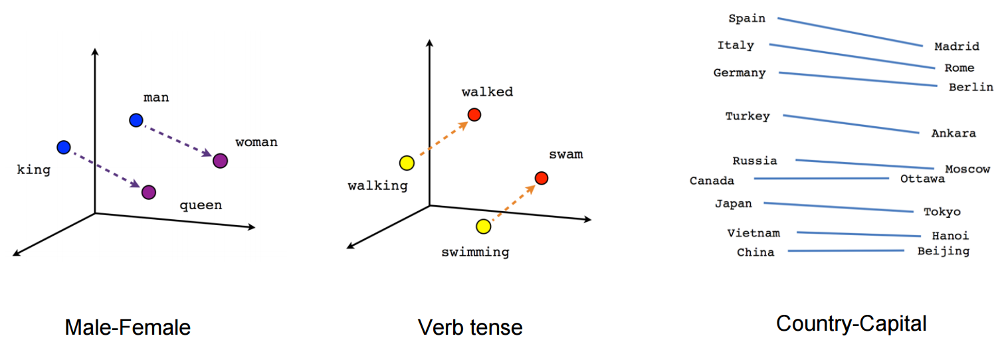

Mimicry in Online Comunications
An exploratory Study of Linguistic Analysis Techniques
Security Lancaster & CREST
Lancaster University
What is mimicry?
- Imitating language ...
- ... or paralanguage ...
- ... or behaviour
Why is mimicry useful?
- A basis for learning
- More successful relationships
- More successful outcomes of joint tasks
- Deception
How does mimicry work?
The Interactive Alignment Model

Lexical
\[LILLA(target, prime) = \frac{p(target|prime)}{p(target)}\]
def lla(target, prime):
counter = 0
for token in target:
counter += prime.count(token)
try:
return counter / (len(prime) * len(target))
except ZeroDivisionError:
return 1.0
Syntactic
\[SILLA(target, prime) = \frac{p(target|prime)}{p(target)}\]
def lla(target, prime):
counter = 0
for token in target:
counter += prime.count(token)
try:
return counter / (len(prime) * len(target))
except ZeroDivisionError:
return 1.0
Instead of words we use phrase structure subtrees
Semantic
Word Vectors

?
Language Style Matching
\[ LSM_{class} = 1 - [(|class_1 - class_2|)] / (class_1 + class_2 + .0001) \]
- Looks at different classes of function words to score a text
- e.g. articles, adverbs, etc.
- Contributes more to the syntax of a sentence than the meaning
- Syntactic measure? Or lexical?
Methodology
-
Data
- ~100 dyadic conversations
- Collected from Twitter API
-
Human classifiers
- Three researchers in related fields
-
Scored for lexical, syntactic and semantic mimicry
- None
- Low
- High
Results
Classifier agreement
| Pair |
Lexical
|
Syntactic
|
Semantic
|
| AB |
0.28 |
0.779 |
0.36 |
< 0.001 |
0.19 |
0.058 |
| AC |
0.32 |
0.001 |
0.35 |
< 0.001 |
0.12 |
0.220 |
| BC |
-0.02 |
0.863 |
0.29 |
0.003 |
0.10 |
0.312 |
Humans vs. computers
| Layer |
Technique |
r |
p |
| Lexical |
LILLA |
0.27 |
0.005 |
| Syntactic |
SILLA |
0.19 |
0.057 |
| Semantic |
Word Vectors |
0.13 |
0.178 |
| Lexical |
LSM |
0.14 |
0.158 |
| Syntactic |
LSM |
0.31 |
0.002 |
| Semantic |
LSM |
-0.13 |
0.202 |
IAM layers — humans
| Layers |
r |
p |
| Lexical |
Syntactic |
0.57 |
< 0.001 |
| Lexical |
Semantic |
0.33 |
< 0.001 |
| Syntactic |
Semantic |
0.28 |
0.005 |
IAM layers — computers
| Techniques |
r |
p |
| LILLA |
SILLA |
0.26 |
0.007 |
| LILLA |
Word Vectors |
-0.30 |
0.005 |
| SILLA |
Word Vectors |
-0.82 |
< 0.001 |
| LSM |
Word Vectors |
-0.57 |
< 0.001 |
Conclusions
- Results mostly as expected ...
- ... except word vectors
- Semantic layer difficult for humans and computers
- LSM appears to work at a syntactic level
- IAM seems credible
Future work
- More techniques
- Better data
- Find something for situation model?
References
- Interactive Alignment Model
- M. J. Pickering and S. Garrod, “Toward a mechanistic psychology of dialogue,” Behavioral and brain sciences, vol. 27, no. 02, pp. 169–190, 2004.
- Local Linguistic Alignment (LLA, LILLA, SILLA)
- Y. Wang, D. Reitter, and J. Yen, “Linguistic adaptation in conversation threads: Analyzing alignment in online health communities,” ACL 2014, p. 55, 2014.
- Word Vectors
- T. Mikolov, I. Sutskever, K. Chen, G. S. Corrado, and J. Dean, “Distributed representations of words and phrases and their compositionality,” in Advances in neural in-formation processing systems, 2013, pp. 3111–3119.
- Language Style Matching (LSM)
- M. E. Ireland, R. B. Slatcher, P. W. Eastwick, L. E. Scissors, E. J. Finkel, and J. W. Pennebaker, “Language style matching predicts relationship initiation and stability,” Psychological Science, vol. 22, no. 1, pp. 39–44, 2011.